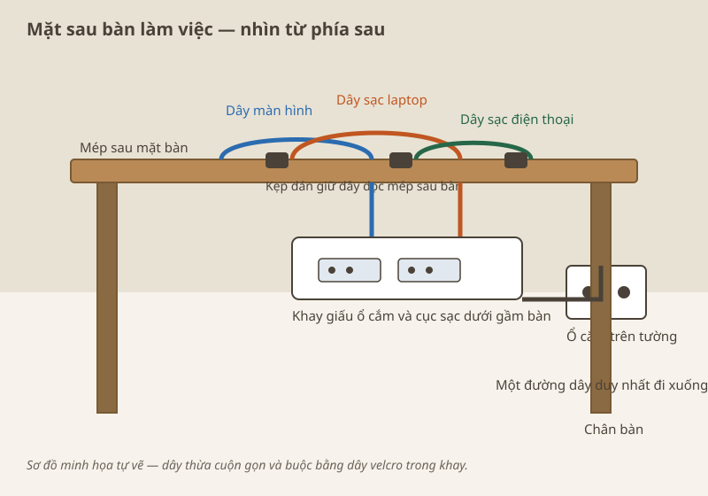

Sắp xếp và giấu dây cáp trên bàn làm việc gọn gàng
Tác giả: Nguyễn Trung Đức
Buổi sáng bạn ngồi vào bàn, tay vừa chạm vào chuột đã vướng phải dây sạc điện thoại. Bạn kéo laptop lại gần thì dây màn hình căng ra, còn dây đèn bàn thì rơi xuống sau bàn từ lúc nào không hay. Bàn vẫn là chiếc bàn ấy, nhưng chỉ riêng mớ dây cáp đã đủ làm mặt bàn trông bừa bộn.
Bài viết này chỉ nói về một việc duy nhất: sắp xếp và giấu dây cáp trên bàn làm việc. Cách làm trong bài dùng đồ có sẵn trong nhà và vài món phụ kiện rẻ, không cần khoan tường hay sửa điện trong nhà.
Vì sao dây cáp trên bàn hay rối
Dây cáp trên bàn rối không phải vì bạn bừa bộn, mà vì mỗi thiết bị đặt lên bàn đều kéo theo ít nhất một sợi dây. Laptop cần dây sạc, màn hình cần dây nguồn và dây tín hiệu, điện thoại cần dây sạc riêng, đèn bàn cần dây nguồn. Chỉ cần bốn hay năm thiết bị, số dây trên bàn đã lên tới gần chục sợi.
Vấn đề thứ hai là dây không có đường đi cố định. Khi mua thiết bị mới, bạn thường cắm dây của nó vào ổ cắm gần nhất rồi để dây buông tự do. Dây dài thừa ra thì cuộn tạm một vòng rồi đặt sau màn hình. Mỗi lần làm như vậy, bàn lại thêm một sợi dây nằm sai chỗ, và các sợi dây bắt đầu quấn vào nhau mỗi khi bạn di chuyển laptop hay kéo ghế. Đầu sạc nhẹ nên hay rơi xuống sau bàn, và bụi bám vào mớ dây rối khiến bàn khó lau chùi. Vì vậy chỉ buộc dây lại thôi chưa đủ: bạn cần rút từng dây ra, phân loại chúng, rồi cho mỗi dây một đường đi cố định.
Phân loại dây trước khi giấu
Bước đầu tiên không phải là mua phụ kiện, mà là rút hết dây ra và xem bạn đang có những gì.
Trước hết, hãy rút phích cắm của mọi thiết bị ra khỏi ổ điện, vì bạn sẽ kéo, gỡ và di chuyển dây trong lúc sắp xếp. Trong lúc rút, bạn nên chụp ảnh lại mặt sau của máy tính, màn hình và ổ cắm, như TrueDesk khuyên, để khi cắm lại bạn không phải đoán xem dây nào cắm vào đâu.
Sau khi rút hết dây, bạn kéo từng sợi dây ra khỏi bàn và đặt chúng thành một hàng trên sàn nhà. Nhiều người chỉ khi rút ra mới phát hiện mình đang dùng hai dây sạc giống nhau. Bây giờ bạn phân loại dây thành ba nhóm. Nhóm thứ nhất là dây dùng hàng ngày: dây sạc laptop, dây nguồn và dây tín hiệu của màn hình, dây sạc điện thoại. Nhóm thứ hai là dây dùng thỉnh thoảng: dây máy in, dây loa ngoài, dây sạc tai nghe, dây kết nối ổ cứng ngoài. Nhóm thứ ba là dây không còn dùng: dây của thiết bị đã hỏng, dây sạc cũ không còn hợp với điện thoại hiện tại, dây thừa mua dự phòng. Bạn nên gom dây theo chức năng, như Máy Tính Gia Phát gợi ý, vì gom theo chức năng đi dây gọn hơn gom theo độ dài.
Với dây không còn dùng, bạn nên cất chúng vào một hộp riêng có nhãn ngoài hộp, hoặc cho đi nếu chắc chắn không dùng nữa. Dây bị sờn vỏ, đứt một phần hay đầu cắm lỏng thì bạn nên bỏ đi và thay dây mới. Cuối cùng, bạn dán nhãn cho từng sợi dây còn dùng: dùng băng dính giấy viết tên thiết bị lên đó, ví dụ "sạc laptop" hay "nguồn màn hình", rồi quấn quanh dây ở cả hai đầu. TrueDesk khuyên dán nhãn cả hai đầu mỗi sợi dây, vì nhiều sợi dây đen giống nhau chui vào cùng một bó sẽ không còn phân biệt được.
| Nhóm dây | Ví dụ | Cách xử lý |
|---|---|---|
| Dùng hàng ngày | Dây sạc laptop, dây nguồn và dây tín hiệu màn hình, dây sạc điện thoại | Đi dây cố định dọc mép sau bàn, đầu sạc để ở chỗ cố định |
| Dùng thỉnh thoảng | Dây máy in, dây loa, dây sạc tai nghe, dây ổ cứng ngoài | Cuộn gọn, cất trong ngăn kéo hoặc hộp, lấy ra khi cần |
| Không còn dùng | Dây sạc cũ, dây của thiết bị đã hỏng, dây thừa | Cất riêng vào hộp có nhãn, hoặc bỏ đi nếu dây đã hỏng |
Đi dây theo một đường
Khi đã biết mình có những dây nào, bạn quyết định đường đi chung cho tất cả dây đang dùng. Nguyên tắc là chỉ có một đường đi duy nhất: từ ổ cắm trên tường, lên dọc một chân bàn, men theo mép sau của mặt bàn, rồi rẽ tới từng thiết bị.
Từ ổ cắm trên tường, thường nằm phía sau bàn, dây sẽ đi lên dọc theo chân bàn ở cùng phía đó. Bạn không nên kéo dây từ ổ cắm chéo qua sàn tới chân bàn bên kia, vì đoạn dây nằm trên sàn vừa dễ vướng chân vừa dễ bị bánh xe ghế cán qua. Bạn cũng nên giữ dây tránh xa bánh xe ghế và lối đi lại.
Từ chân bàn, dây đi lên gầm bàn rồi men theo mép sau của mặt bàn. Bạn dùng kẹp dán hoặc móc dán để giữ dây dọc theo mép sau bàn: kẹp dán là miếng nhựa nhỏ có keo ở mặt sau, bạn dán lên mép bàn rồi luồn dây qua; móc dán thì treo dây vào móc thay vì luồn qua kẹp. Nếu bàn là mặt kính hay mặt bàn mỏng, bạn không nên khoan hay bắt vít vào mặt bàn. MakerStations lưu ý không khoan mặt bàn kính, và với mặt bàn mỏng thì nên dùng khay kẹp vào mép bàn hoặc dán kẹp vào khung và chân bàn.
Bạn nên đo khoảng trống dưới gầm bàn và đường đi từ bàn tới ổ cắm trên tường trước khi mua phụ kiện, như TrueDesk khuyên. Bạn cũng nên để lại một đoạn dây chùng nhỏ gần mỗi thiết bị, đừng kéo dây căng từ kẹp tới thiết bị, vì khi bạn xoay màn hình hay kéo laptop lại gần, dây căng sẽ giật đầu cắm ra. TrueDesk khuyên để lại đoạn dây chùng vừa đủ để thiết bị dịch chuyển mà không kéo căng dây, rồi cuộn phần dây thừa còn lại và buộc gọn. Cuối cùng, bạn ngồi vào ghế và làm việc thử vài phút để kiểm tra xem dây có vướng tay hay bị kéo căng khi bạn di chuyển không.
Buộc và kẹp dây gọn
Đi dây theo một đường giúp dây không còn nằm lung tung, nhưng phần dây thừa của mỗi sợi vẫn cần được buộc gọn. Dây sạc thường dài hơn khoảng cách từ ổ cắm tới thiết bị, nên phần thừa cần cuộn thành vòng tròn vừa tay rồi buộc gọn lại. Bạn cũng đừng buộc dây quá chặt. Hướng dẫn của Máy Tính Gia Phát lưu ý khi cố định dây phải chắc chắn nhưng không quá căng, để tránh làm hỏng dây.
Có hai loại dây buộc: dây rút nhựa buộc rất chắc, nhưng muốn thay đổi bạn phải cắt bỏ và dùng dây mới. Dây dán velcro thì mềm hơn, bạn tháo ra và buộc lại được nhiều lần, nên hợp với những dây bạn hay tháo lắp hoặc hay thay đổi vị trí. Máy Tính Gia Phát nêu rõ: dây rút nhựa cố định chắc và lâu dài, còn dây velcro linh hoạt hơn và tái sử dụng được nhiều lần. Với bàn làm việc tại nhà, dây velcro thường tiện hơn, vì bạn sẽ còn thêm hoặc bớt thiết bị theo thời gian.
Ngoài dây buộc, bạn có thể dùng ống bọc dây — ống vải hoặc ống nhựa xẻ dọc — để gom nhiều sợi dây đi cùng hướng thành một bó duy nhất. Ống bọc hợp với đoạn dây từ màn hình đi xuống gầm bàn, vì đoạn này thường có ba sợi đi cùng nhau: dây nguồn, dây tín hiệu và dây của loa hoặc webcam. Bạn nên chọn loại ống xẻ dọc hoặc có khóa dán, để sau này thêm dây mới bạn chỉ cần mở ống ra. Một món đồ có sẵn trong nhà mà bạn có thể tận dụng là kẹp giấy loại lớn: bạn kẹp kẹp giấy vào mép sau của mặt bàn, rồi luồn đầu dây sạc qua hai tai kim loại của kẹp, đầu sạc sẽ nằm gọn trong tai kẹp và không rơi xuống sau bàn nữa. Trên mặt bàn, bạn chỉ để lại đoạn dây ngắn vừa đủ dùng, đầu sạc điện thoại giữ bằng kẹp dán ở một góc cố định.

Giấu ổ cắm và bộ sạc
Ổ cắm nối dài và các cục sạc là phần xấu nhất của mớ dây, vì chúng to, nặng và có nhiều dây chui ra từ nhiều hướng. Bạn có thể đặt chúng vào khay dưới gầm bàn, hoặc đặt vào hộp giấu dây.
Khay dưới gầm bàn là khay lưới kim loại hoặc khay nhựa gắn cố định vào mặt dưới của mặt bàn, ở phía sau gần mép bàn. Bạn đặt ổ cắm nối dài vào khay, cắm các cục sạc vào ổ cắm, rồi cho phần dây thừa vào khay cùng. Từ khay, chỉ còn một sợi dây duy nhất đi xuống chân bàn tới ổ cắm trên tường, và vài sợi dây ngắn đi lên mặt bàn tới từng thiết bị. TrueDesk mô tả khay dưới bàn là cách đơn giản nhất để giấu ổ cắm, vì một khi ổ cắm đã có chỗ ở riêng, một nửa mớ dây lộn xộn sẽ biến mất theo. Máy Tính Gia Phát cũng nêu khay dưới bàn chứa được ổ điện, cục sạc và toàn bộ dây thừa. Trước khi mua khay, bạn nên đo gầm bàn và kích thước ổ cắm cùng cục sạc lớn nhất của bạn.
Nếu chưa muốn mua khay, bạn có thể dùng một chiếc hộp cứng có sẵn trong nhà làm hộp giấu ổ cắm: chọn hộp nhựa hoặc hộp bìa cứng vừa với ổ cắm, cắt hai khe ở hai đầu hộp để dây đi vào và đi ra, đặt ổ cắm vào trong rồi đậy nắp lại. Bạn nên cắt thêm vài lỗ nhỏ trên thành hộp để không khí lưu thông, và đừng đậy kín hộp bằng băng dính. Sạc điện thoại nên có một chỗ cố định riêng, không để lẫn với ổ cắm dưới gầm bàn: bạn đặt một kẹp dán ở góc sau của mặt bàn, luồn dây sạc qua kẹp, và để đầu sạc nằm ngay trên mặt bàn ở góc đó.
An toàn điện: những nguyên tắc phòng ngừa
Phần này không phải là tư vấn điện chuyên môn, mà là những nguyên tắc phòng ngừa để bạn tự bảo vệ mình khi sắp xếp dây cáp.
Thứ nhất, không tự đấu nối hay sửa dây điện trong nhà. Những việc liên quan tới điện trong tường thì bạn nên nhờ thợ điện.
Thứ hai, không cắm quá nhiều thiết bị vào một ổ cắm. Bạn chỉ nên cắm số thiết bị vừa với số lỗ cắm của ổ cắm, và không cắm một ổ cắm nối dài vào một ổ cắm nối dài khác. MakerStations dẫn cảnh báo của Electrical Safety First rằng cắm ổ cắm nối dài vào một ổ cắm nối dài khác có thể làm phích cắm ở ổ tường bị quá nóng.
Thứ ba, không để dây bị kẹp dưới chân bàn hay chân ghế. Dây bị kẹp lâu ngày sẽ bị bẹp vỏ, hở lõi và có thể gây chập. Dây đi dọc chân bàn phải được kẹp cố định vào chân bàn, không để dây buông tự do xuống sàn rồi bị chân ghế đè lên.
Thứ tư, dây sờ thấy nóng hoặc có mùi khét thì ngừng dùng và thay dây mới. Nếu dây nóng rõ rệt, vỏ dây mềm đi hay có mùi khét, bạn nên rút phích cắm ra ngay và không dùng lại sợi dây đó.
Thói quen giữ bàn không rối lại
Giấu dây xong không có nghĩa là dây sẽ gọn mãi. Chỉ cần bạn mua thêm một thiết bị mới, hay một lần vội vàng rút dây mà không buộc lại, mớ dây sẽ bắt đầu rối trở lại.
Thói quen đầu tiên là kiểm tra dây hai phút mỗi tháng. TrueDesk gợi ý dành hai phút mỗi tháng để giữ dây luôn gọn: lau bụi trong khay, cuộn lại phần dây thừa đã tuột khỏi dây buộc, thay nhãn dán đã bong, và đi dây của thiết bị mới theo đường dây có sẵn.
Thói quen thứ hai là mỗi khi có thiết bị mới, bạn đi dây của nó theo đường dây cũ ngay trong ngày mua về, đừng để dây mới nằm tạm trên mặt bàn với ý định "mai sẽ giấu". Thói quen thứ ba là trả dây về chỗ cũ sau mỗi lần rút ra: khi bạn rút dây sạc laptop để mang laptop ra ngoài, bạn nên cuộn dây lại và đặt vào ngăn kéo, thay vì để dây nằm vắt ngang mặt bàn. Bạn cũng nên lau khay và gầm bàn cùng lúc với lau mặt bàn.
Bạn có thể in checklist dưới đây và dán ở sau bàn để nhớ:
- [ ] Dây mới đã dán nhãn và đi theo đường dây cũ
- [ ] Dây thừa đã cuộn gọn và buộc lại
- [ ] Không có dây nào nằm dưới chân bàn hay chân ghế
- [ ] Khay giấu ổ cắm đã lau bụi trong tháng này
- [ ] Không có dây nào nóng bất thường hay có mùi khét
Kết luận
Sắp xếp và giấu dây cáp trên bàn làm việc không cần nhiều tiền và không cần sửa điện trong nhà. Bạn chỉ cần làm đúng thứ tự: rút hết dây ra và phân loại dây dùng hàng ngày, dây dùng thỉnh thoảng, dây không còn dùng; cho dây đang dùng đi theo một đường duy nhất từ ổ cắm trên tường lên dọc chân bàn rồi men theo mép sau bàn; buộc phần dây thừa bằng dây velcro, kẹp dây bằng kẹp dán; và giấu ổ cắm cùng cục sạc vào khay hoặc hộp dưới gầm bàn.
Bạn cũng nên nhớ các nguyên tắc an toàn trong bài: rút phích cắm trước khi sắp xếp, không tự đấu nối điện trong nhà, không cắm quá nhiều thiết bị vào một ổ cắm, không để dây bị kẹp, và ngừng dùng dây nóng bất thường hay có mùi khét. Những nguyên tắc này là biện pháp phòng ngừa, không phải tư vấn điện chuyên môn; việc liên quan tới điện trong tường thì bạn nên nhờ thợ điện.
Nguồn tham khảo
- Máy Tính Gia Phát, "Hướng dẫn giấu dây điện bàn máy tính cực gọn gàng, thẩm mỹ" — dùng cho các khẳng định về phân loại dây theo chức năng và dán nhãn từng đầu dây; dây rút nhựa cố định chắc nhưng phải cắt khi thay đổi, dây velcro tháo ra dùng lại được; khay dưới bàn chứa ổ cắm, cục sạc và dây thừa; cố định dây chắc chắn nhưng không quá căng; hộp giấu dây che ổ cắm và dây nguồn (truy cập 23/11/2026): https://maytinhgiaphat.vn/huong-dan-giau-day-dien-ban-may-tinh-cuc-gon-gang-tham-my/
- TrueDesk, "How to Hide Cables on and Under Your Desk" — dùng cho các khẳng định về chụp ảnh từng đầu nối trước khi rút dây; dán nhãn cả hai đầu mỗi sợi dây; đo gầm bàn và đường tới ổ cắm trước khi mua phụ kiện; đo cục sạc lớn nhất rồi đối chiếu với kích thước khay; kẹp dán dọc mép sau bàn giữ đầu sạc; đi dây xuống một chân bàn thành một đường và để lại đoạn dây chùng; tránh bánh xe ghế và lối đi lại; kiểm tra hai phút mỗi tháng (truy cập 23/11/2026): https://www.true-desk.com/blogs/insights/hide-cables-on-and-under-desk
- MakerStations, "How to Hide Cables Under Your Desk" — dùng cho các khẳng định về không khoan mặt bàn kính và dùng kẹp hoặc dán với mặt bàn mỏng; cố định ổ cắm dưới gầm bàn để chỉ còn một dây đi tới ổ tường; khay dưới mép sau bàn chứa ổ cắm, cục sạc và dây thừa; cảnh báo không cắm ổ cắm nối dài vào một ổ cắm nối dài khác vì có thể làm phích cắm ở ổ tường bị quá nóng, dẫn cảnh báo của Electrical Safety First (truy cập 23/11/2026): https://www.makerstations.io/how-to-hide-cables-under-desk/